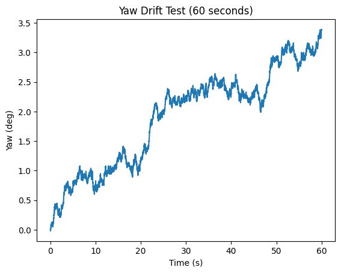
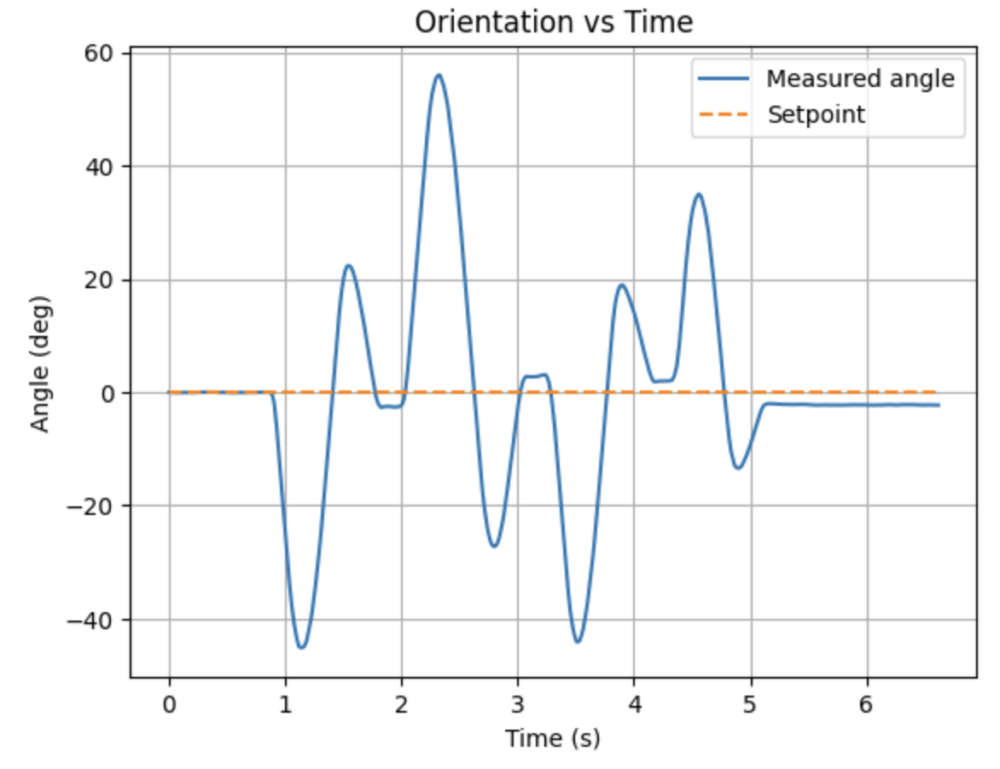
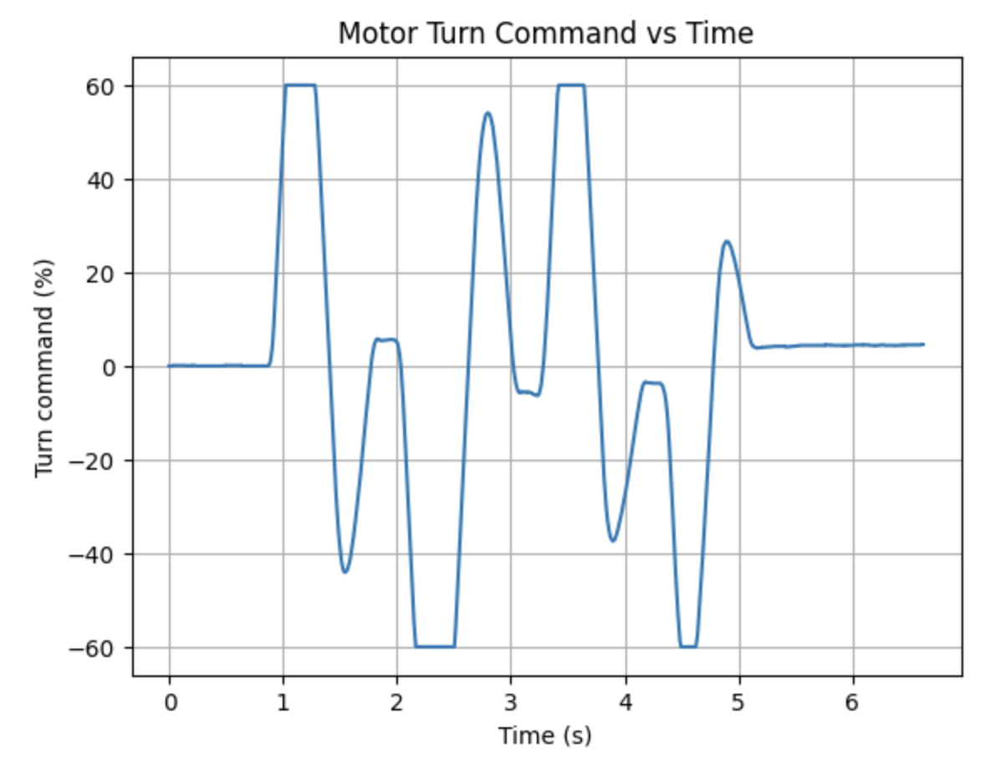
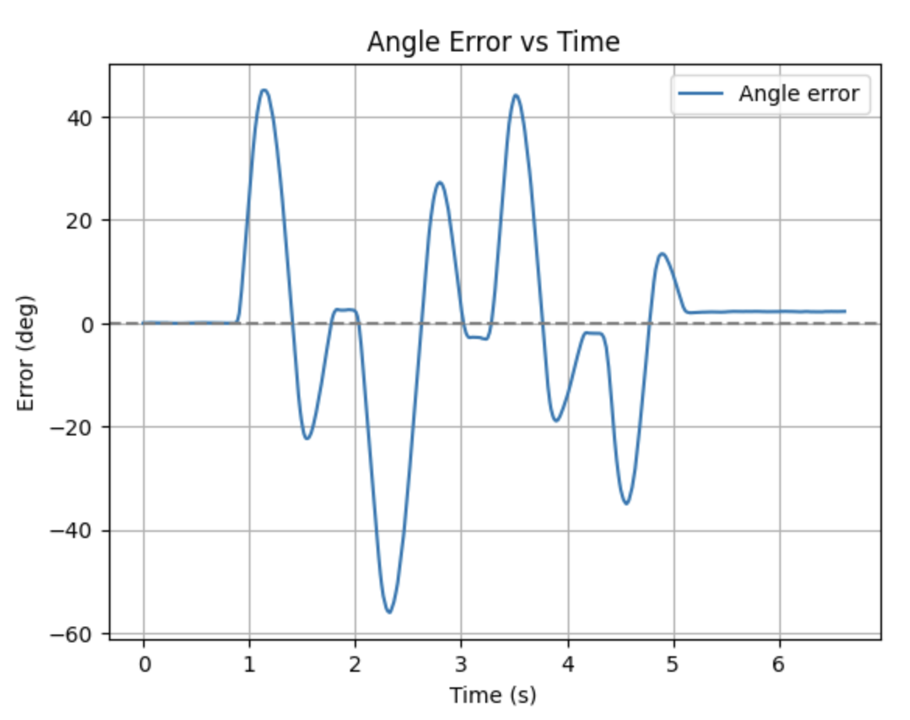
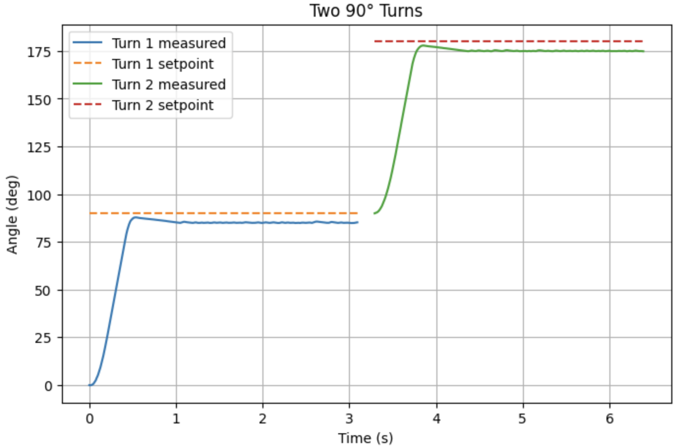

The goal of this lab is to control the robot’s orientation using a PID controller and yaw measurements from the IMU. The controller adjusts the motor speeds to rotate the robot to the target angle and recover from disturbances.
For this lab, I reused my Lab 5 system architecture, including the BLE communication framework, motor driver interface, and PID controller structure. The main change was replacing the ToF-based distance feedback with IMU-based orientation feedback.
The controller input was modified to use the robot’s yaw angle from the IMU. The yaw is estimated by integrating the gyroscope z-axis over time, after subtracting a calibrated bias:
const float gz = g_icm.gyrZ() - g_gyro_bias_z_dps;
g_imu_state.yaw_g += gz * dt;A key limitation of this approach is drift due to gyro bias. Even a small constant bias causes the integrated yaw to slowly increase over time when the robot is stationary. To reduce this, I calibrated the gyro bias at startup by averaging stationary readings and subtracting this offset from future measurements.
To minimize integration error, I calibrated the gyroscope bias at startup, maintained consistent loop timing for accurate integration, and limited the duration of control runs so that accumulated drift remained small.
To evaluate the remaining drift, I performed a stationary test for 60 seconds. Over this period, the yaw estimate drifted by approximately 3.38 degrees, corresponding to a drift rate of about 0.056 deg/s. Since this drift is relatively small, I did not implement the DMP.
Figure: Yaw drift over 60 seconds while stationary

The gyroscope also has a finite measurement range. The ICM-20948 supports up to ±2000 degrees per second, which is significantly higher than the robot’s actual turning speed, so saturation was not a concern in this application.
Since yaw is bounded between -180° and 180°, I added angle wrapping to ensure the error always represents the shortest rotation direction:
float err = target_deg - current_deg;
while (err > 180.0f) err -= 360.0f;
while (err < -180.0f) err += 360.0f;Angle wrapping ensures that the robot always rotates along the shortest path, avoiding large unnecessary rotations when crossing the ±180° boundary.
The PID controller structure remained similar to Lab 5, but now operates on angular error. The control output is computed and clamped to a normalized range:
float u = p_term + i_term + d_term;
u = clamp(u, g_pid.output_min, g_pid.output_max);In practice, I implemented a PI controller. Since yaw is obtained by integrating gyroscope angular velocity, taking the derivative of the error effectively recovers angular velocity, so using a derivative term is mathematically valid. However, the derivative term is highly sensitive to noise and can amplify small fluctuations in the IMU signal. Additionally, changing the setpoint during runtime can cause derivative kick, where the error changes abruptly and produces a large spike in the derivative term. To avoid instability, I set Kd = 0. Although a derivative term with low-pass filtering exists in the framework, it was not used in the final controller.
To improve stability near the setpoint, I also added a small stop band so the motors turn off when the error is within a few degrees.
The control loop was implemented in a non-blocking manner so that Bluetooth communication remains active while the controller is running. This allows PID gains and setpoints to be updated in real time without stopping the robot, which significantly improves tuning efficiency.
The ability to change the setpoint during execution is important for future applications such as navigation and trajectory tracking. The controller structure was designed so that the turning command can be combined with a forward velocity term:
left = forward + turn;
right = forward - turn;Although this lab only requires turning in place, this structure allows orientation control to be extended to forward or backward motion in future labs.
The PI controller computes the control input based on angular error:
\[ e(t) = \theta_{set} - \theta(t) \]
\[ u(t) = K_p e(t) + K_i \int e(t)\,dt \]
In discrete implementation:
\[ u = K_p e + K_i \sum e \cdot dt \]
The control output is applied as a differential motor command to rotate the robot.
Kp = 0.02
Ki = 0.0005
Kd = 0For the recovery task, I set the robot’s initial orientation as the setpoint and then manually disturbed it. The robot successfully returned to its original orientation. The response shows overshoot and oscillation due to wheel traction effects, but the error decreases over time and settles near the setpoint.
Figure: Orientation response and motor output



For the second task, I commanded two sequential 90° turns. The robot rotated from 0° to 90° and then from 90° to 180°, converging close to each target. The response was smoother and more repeatable than the disturbance recovery case.

Overall, the PI controller achieved stable and repeatable orientation control. The proportional term provided the main turning response, while the integral term reduced steady-state error.
I reused and applied wind-up protection from Lab 5 by limiting the growth of the integral term. Without wind-up protection, the robot exhibited larger overshoot because the integral term continued accumulating error and caused excessive correction.
With wind-up protection, the response became more stable and overshoot was reduced. This was especially important during disturbance recovery and when testing on different surfaces.